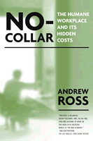

A revealing look at New Economy workplaces
A revealing look at New Economy workplaces


 A revealing look at New Economy workplaces
A revealing look at New Economy workplaces

|  |
No-CollarThe Humane Workplace and Its Hidden CostsAndrew Rosspaper EAN: 978-1-59213-150-1 (ISBN: 1-59213-150-6) |
"Provides a balanced, richly textured, and, in the end, chilling account of work in the high-tech digitized world of the New Economy."
—William Wolman, The Los Angeles Times Book Review
While the internet bubble has burst, the New Economy that the internet produced is still with us, along with the myth of a workplace built around more humane notions of how people work and spend their days in offices. No-Collar is the only close study of New Economy workplaces in their heyday.
Andrew Ross, a renowned writer and scholar of American intellectual and social life, spent eighteen months deep inside Silicon Alley in residence at two prominent New Economy companies, Razorfish and 360hiphop, and interviewed a wide range of industry employees in other cities to write this remarkable book. Maverick in their organizations and permissive in their culture, these workplaces offered personal freedoms and rewards that were unheard of in corporate America. Employees feared they may never again enjoy such an irresistible work environment. Yet for every apparent benefit, there appeared to be a hidden cost: 70-hour workweeks, a lack of managerial protection, an oppressive shouldering of risk by employees, an illusory sense of power sharing, and no end of emotional churning. The industrialization of bohemia encouraged employees to think outside the box, but also allowed companies to claim their most free and creative thoughts and ideas.
In these workplaces, Andrew Ross encountered a new kind of industrial personality, and emerged with a sobering lesson. Be careful what you wish for. When work becomes sufficiently humane, we tend to do far too much of it, and it usurps an unacceptable portion of our lives. He concludes that we should not have to choose between a personally gratifying and a just workplace, we should strive to enjoy both.
Excerpt available at www.temple.edu/tempress
"No-Collar is a wonderful read, with well-written prose and an engaging style. It can be read as an interesting story about a period of time, a description of a particular group of people, or an insightful critique of our market civilization."
—Administrative Science Quarterly
"[Ross] provides many insights into the IT Workplace....This book has much to offer... Ross has written a well-researched, cautionary analysis of the IT work environment that is not deterministic or unjustifiably celebratory. Anyone reading this book will find that the IT industry is not particularly unique; nor are the workplaces operating in it."
—Labour/Le Travail
Acknowledgments
Preface to the 2004 Edition
1. Jobs in Candyland: An Introduction
2. The No-Collar People
3. The Golden Children of Razorfish
4. The Industrialization of Bohemia
5. A Hip-Hop Haven
6. Optimize Me
7. After the Kool-Aid
Notes
Index
 | Andrew Ross is Professor in the American Studies program at New York University. A writer for Artforum, The Nation, The Village Voice, and many other publications, he is the author or editor of thirteen books, including The Celebration Chronicles, Real Love, The Chicago Gangster Theory of Life, Strange Weather, No Respect, and, most recently, Low Pay, High Profile: The Global Push for Fair Labor. |
Labor Studies and Work
American Studies
Sociology
© 2015 Temple University. All Rights Reserved. This page: http://www.temple.edu/tempress/titles/1785_reg.html.